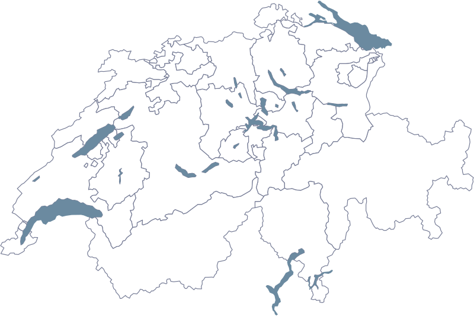

Filter Region
Launchform: nur Kanton
Solange keine Location einen Ort hat, fehlen Tabs und Ort-Feld. Mit der ersten Location mit Ort kommt der Tab von selbst.
Wo soll dein Event stattfinden?

Quelle: Bundesamt für Statistik (BFS), GEOSTAT
Launchform: Zürich gewählt, Aargau angetippt
Die Karte bleibt am Telefon, unter dem Eingabefeld und in voller Breite. Für kleine Kantone ist das Feld der sichere Weg.

Mit Tabs: Kanton, Liste offen
Die Liste erscheint ab zwei Zeichen, höchstens sechs Einträge.
Wo soll dein Event stattfinden?
- Zug
- Zürich
Quelle: Bundesamt für Statistik (BFS), GEOSTAT
Mit Tabs: Ort/PLZ, Liste offen
Wo soll dein Event stattfinden?
- 8706 Meilen
- 3860 Meiringen
Quelle: Bundesamt für Statistik (BFS), GEOSTAT
Mit Tabs: Ort gewählt, Umkreis und Pin
Auf diesem Tab reagiert die Karte nicht auf Klicks. Pin und Umkreis folgen dem Regler.